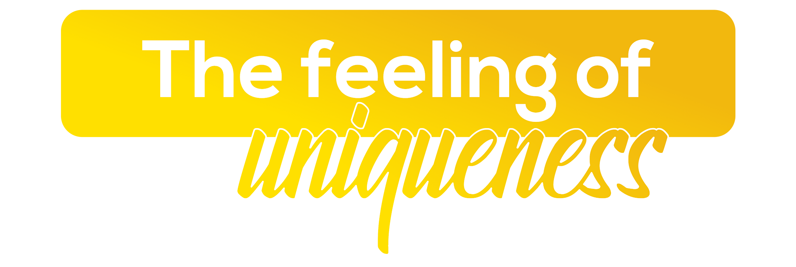

The Feeling of Uniqueness
Classical and contemporary, traditional and progressive — Chennai defies easy labels and rewards every visitor who looks deeper.
Chennai is a city that reveals itself slowly and rewards those with patience. India's fourth-largest metropolitan area, Chennai blends Dravidian temple architecture and Carnatic classical arts with booming IT corridors, global automotive industries, and a fiercely proud Tamil identity. No two experiences of this city are ever the same.
AIESEC in Chennai places exchange participants at the intersection of tradition and modernity — from teaching in neighbourhood schools to interning at multinational corporations on OMR. This is a city that celebrates uniqueness, in its people, its culture, and in every exchange participant who calls it home.

What makes Chennai unforgettable.

At 13 kilometres end to end, Marina is the longest natural urban beach in the world — but statistics miss the point. The beach is Chennai's great public commons, used simultaneously for morning exercise, political rallies, fishing, cricket, and evening socialising by millions. Early morning and sunset are when it is at its most alive.

From December to January each year, Chennai hosts the Margazhi Music and Dance Season — widely considered the world's largest classical arts festival, with over 2,000 performances across the city's sabhas. Carnatic music and Bharatanatyam are practised here with the seriousness European capitals give to opera. Exchange participants arriving during this season step into something genuinely extraordinary.

The Kapaleeshwarar Temple in Mylapore, with its 37-metre multicoloured gopuram, is the centrepiece of a neighbourhood that has been continuously inhabited and spiritually active for over a thousand years. Dravidian temple architecture is one of the great sculptural traditions in human history, and Chennai is surrounded by its finest examples. Even a single afternoon in Mylapore changes how you understand Indian civilisation.

Chennai's filter coffee culture is a practice of precise ritual: the brew passes through a steel filter, blends with hot milk, and is served in a steel tumbler and davara to be poured back and forth to cool and froth. The temperature, the ratio, and the accompaniment of tiffin are all specific and important. It is a small regional pleasure that becomes, for many visitors, genuinely addictive.

Chennai is India's Detroit — home to Ford, Hyundai, BMW, Renault-Nissan, and Ashok Leyland, which together make the city the country's automotive manufacturing capital. Its IT sector, centred on the Old Mahabalipuram Road corridor, adds a second engine. The combination of manufacturing and technology creates a business environment with few direct equivalents in India.

Sixty kilometres south along the East Coast Road, the Pallava port city of Mahabalipuram left behind some of India's most extraordinary rock-cut and structural temples — including the Shore Temple standing directly on the Bay of Bengal. The drive itself, along the coast, is one of the most pleasant in South India. It is an easy and entirely worthwhile day trip from Chennai.

Chennai's suburban rail — established in 1931 and running on three corridors from Chennai Central — carries over a million passengers daily and makes the city navigable without a car. The Egmore-Tambaram corridor connects accommodation zones with the city centre and tech parks along the Old Mahabalipuram Road. The fares are minimal and the coverage is excellent.

Chettinad cuisine — born in the kitchens of the Nattukotai Chettiars of the Sivaganga district — is among the most complex and aromatic regional cooking in India, using spices including kalpasi and marathi mokku that appear in almost no other tradition. Chennai's Chettinad restaurants serve this food at its authentic best. A single meal here expands your understanding of what Indian cooking can be.
Everything you need to know before arriving in Chennai.
Options include hostels, host families, and shared flats — ideally within a 4 km radius of your workplace. Your local committee will help arrange everything.
Expect ₹10,000–12,000 per month for transport, meals, and daily expenses. Chennai offers excellent value across food and transport, with a rich range of dining options for every budget.
Chennai has excellent connectivity via local suburban trains, CMBT MTC buses, and Ola/Uber cabs. The train network is the most affordable way to travel across the city's expanse.
You'll need a valid Indian visa for your exchange. Your local committee will provide a detailed visa guide and assist with the application process.
Chennai has world-class healthcare including Apollo, MIOT, and government hospitals. Your local committee provides health guidelines and is available 24/7 for support.
Tamil is the local language — learning even a few words ("Vanakkam!", "Nandri!") is deeply appreciated. English is widely spoken in professional settings, though Hindi is less common here.
Jio, Airtel, and Vi offer strong 4G/5G coverage across Chennai. SIM cards can be purchased at the airport arrivals or any authorised store using your passport. Data plans are very affordable.
Dress conservatively at temples — cover your shoulders, knees, and remove shoes. Some temples do not allow non-Hindus into inner sanctuaries. Tamil culture values sincerity and respect for elders above all.
Three ways to experience Chennai through AIESEC.

A 6–8 week volunteering exchange program for ages 18–30, focused on sustainable development goals. Make a tangible impact on local communities while immersing yourself in Tamil Nadu culture.

A professional internship experience designed to accelerate your career development in a global setting. Work with Chennai's growing industries and gain real-world professional skills.

Bridge educational gaps by teaching in Chennai's schools and communities. Develop culturally responsive pedagogy while making a lasting impact on young learners.

Your dedicated team in Chennai, ready to make your exchange unforgettable.
Reach out to our national team for any questions about exchanges in Chennai.


